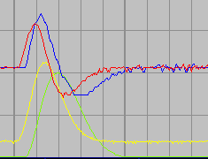

Hartspier Tensie (F97)
Inleiding
Beschikbare signalen
Excel Voorbeeld
|
Het krachtsignaal wordt gefilterd met een instelbaar (eerste orde) laagdoorlaat filter om ruisvrije bepaling van de top-top amplitude te verkrijgen. Bij een afsnijfrekwentie van 10 Hz wordt een redelijk betrouwbaar signaal verkregen, zonder dat de top noemenswaardig wordt beïnvloed. Zie hiernaast, rood is ruwe signaal, geel is het gefilterde signaal. |
|
Voor de bepaling van de helling wordt gebruik gemaakt van average sloop method. Naast dat deze methode eenvoudig is, heeft hij het grote voordeel dat een impliciete laagdoorlaat filtering uitvoert. Links een afbeelding met een differentie lengte van 10 en rechts een diffirentie lengte van 40. We zien dat een differentielengte van 40, goed filtert en amplitude en fase nauwelijks aantasten. |
|
 |
Max-Min detectie van het kracht signaal
|
Pulsdetectie van de stimulus gebeurt door de stimulus puls ( rode curve) eerst te filteren met een eerste order laagdoorlaat filter ( met vaste afsnij-frequentie) en vervolgens met een state-machine te zoeken naar het punt waar puls > filtered stimulus en vervolgens naar filtered stimulus. |
Export Instellingen
Sample frekwentie = 500 Hz: middeling over 30000 levert dus 1 minuut periode.
Signaal Kalibratie